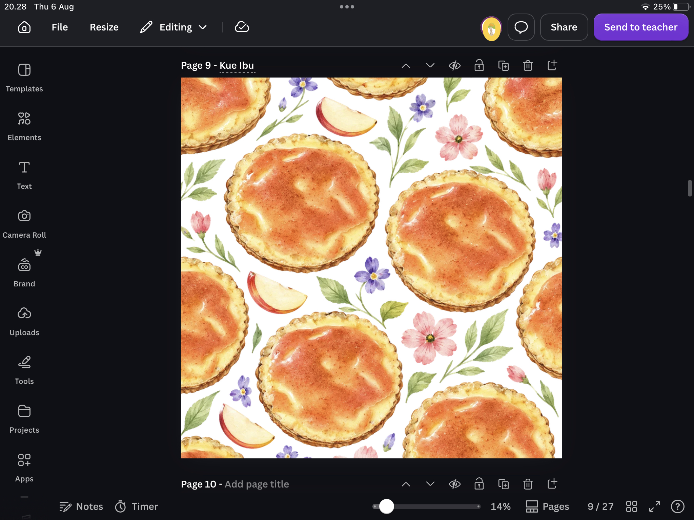
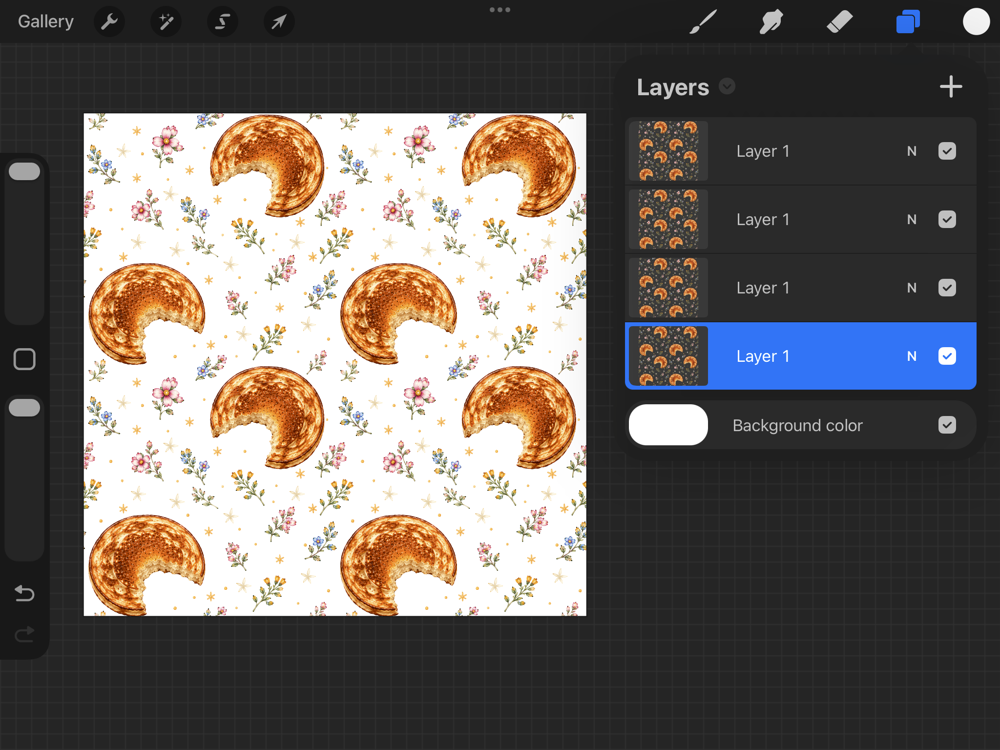
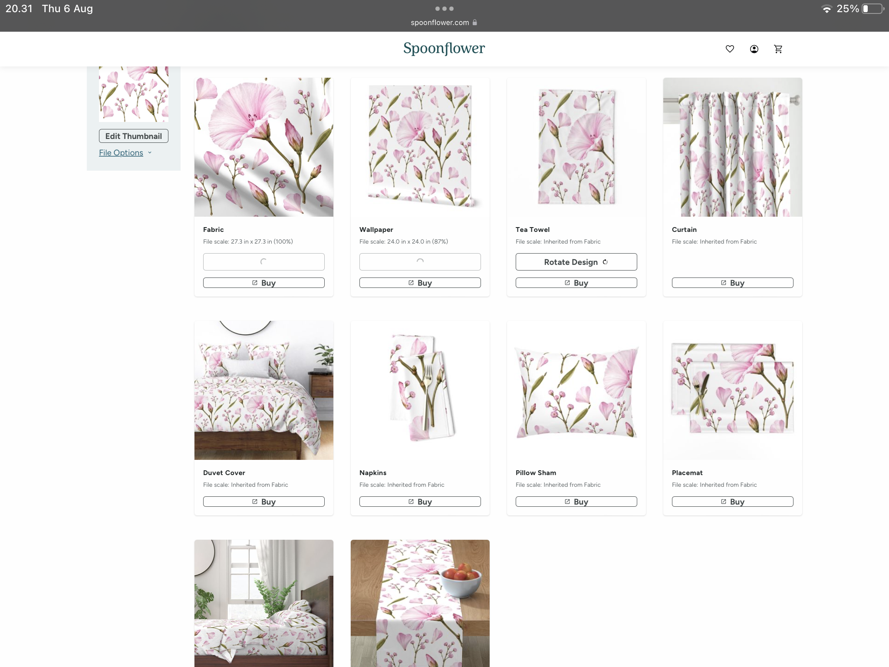

Kalau galeri HP kamu penuh dengan foto bunga, makanan, pemandangan, daun, atau benda-benda sehari-hari, jangan buru-buru menghapusnya.
Bisa jadi foto-foto itu adalah aset digital yang belum kamu sadari. Satu foto dapat dikembangkan menjadi berbagai desain seamless pattern untuk kain, wallpaper, kemasan produk, scrapbook digital, hingga marketplace microstock.
Apa Itu Seamless Pattern?
Seamless pattern adalah gambar yang dapat diulang tanpa terlihat batas sambungannya. Pattern seperti ini banyak digunakan untuk kain, wallpaper, gift wrapping, kemasan produk, scrapbook digital, background website, dan produk print-on-demand.
Langkah 1 — Pilih Foto dari Galeri HP
Kamu tidak harus membeli foto premium. Justru, mulai dari foto milikmu sendiri. Bunga, daun, makanan, kopi, tanaman, buah, bebatuan, benda vintage, dan dekorasi rumah semuanya bisa menjadi sumber ide.
Foto sederhana sering kali justru menghasilkan pattern yang unik.
Langkah 2 — Ubah Menjadi Pattern Menggunakan AI
Setelah memilih foto, AI dapat membantu mengembangkan satu foto menjadi berbagai komposisi pattern sehingga kamu tidak perlu menyusun seluruh elemen secara manual dari awal.
Untuk microstock, kanvas 4096 × 4096 piksel sudah cukup. Hasil akhir dapat diekspor sebagai JPEG, sedangkan PNG dapat digunakan ketika membutuhkan latar transparan.

Langkah 3 — Pastikan Pattern Benar-Benar Seamless
Pattern yang terlihat bagus sebagai satu gambar belum tentu benar- benar seamless ketika diulang. Karena itu, selalu lakukan pengecekan sebelum dipublikasikan.
Kamu bisa menggunakan Adobe Illustrator, Affinity Designer, Canva, atau Procreate. Canva cukup praktis untuk mengecek sambungan, sedangkan Procreate bisa digunakan untuk merapikan detail dan transisi.
Spoonflower juga dapat digunakan untuk melihat simulasi pattern pada kain, wallpaper, dan berbagai produk.

Contoh Nyata
Pattern di bawah ini berawal dari satu foto piring sarapan buatan ibuku. Awalnya hanya sebuah foto biasa di galeri HP. Setelah diproses menjadi seamless pattern, foto tersebut berubah menjadi aset digital yang dapat digunakan dan dipublikasikan.
Menurutku, bagian paling menyenangkan adalah melihat sebuah foto sederhana berubah menjadi sesuatu yang memiliki nilai komersial.

Hasil Pattern yang Sudah Live
Berikut beberapa contoh pattern yang dibuat menggunakan workflow di atas. Sebagian pattern tersebut telah diterima dan dipublikasikan di Adobe Stock dan Dreamstime.
Mau Prosesnya Lebih Cepat?
Kalau kamu ingin mempercepat proses membuat pattern tanpa harus memulai semuanya dari nol, aku membuat Pattern Studio AI.
Pattern Studio AI membantu mengubah satu foto menjadi berbagai ide seamless pattern yang dapat dikembangkan lagi sesuai gaya desainmu.
- Pemula yang baru belajar membuat pattern
- Kontributor microstock
- Desainer surface pattern
- Kreator print-on-demand
✨ Syaima's Notes
Semua pattern yang ditampilkan di artikel ini berasal dari foto yang aku ambil sendiri, kemudian diolah menggunakan workflow berbasis AI. Sebagian hasilnya telah diterima dan dipublikasikan di Adobe Stock dan Dreamstime.
Blog ini bukan tentang membuat AI menggantikan kreativitas. Justru sebaliknya, AI adalah alat untuk mengembangkan ide yang sudah kita miliki.